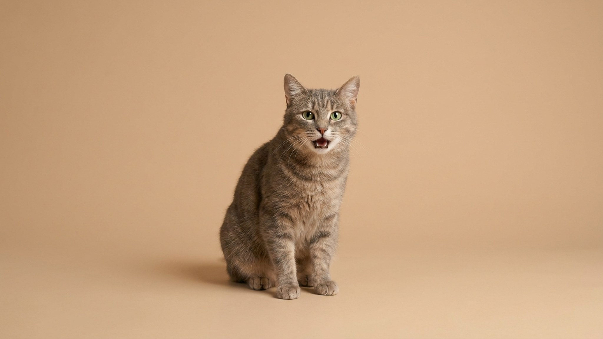

Кошка смотрит на вас, открывает рот, а тишина. Никакого звука. Это не сбой и не признак чего-то плохого. Беззвучное мяу считается одним из самых личных сигналов, которые кошка направляет именно вам. Разбираемся, почему так происходит, как на это отвечать и когда стоит присмотреться.
🐾 У вашей кошки так же?
Расскажите в AnimaLife, как ведёт себя ваш питомец, — приложение объяснит причину и даст пошаговый план. Бесплатно, без записи к специалисту.
Разобрать свой случай → Разобрать в MAX →
У вас iPhone? AnimaLife есть в App Store
Кошки слышат частоты до 65 000 Гц, человеческий потолок около 20 000 Гц. Когда кошка «молчит», она нередко издаёт звук в диапазоне выше нашего порога восприятия. Рот открывается, связки работают, импульс идёт. Ухо человека его просто не регистрирует.
Это физиологически нормально. Кошки используют высокочастотные вокализации в нескольких контекстах: общение мать-котёнок, межкошачьи сигналы на расстоянии, реакция на движущихся насекомых (то самое цоканье у окна). Когда кошка «мяукает» вам беззвучно, она выбирает частоту. Осознанно или нет, это другой вопрос, но сам факт поведения от этого не меняется.
Взрослые кошки мяукают почти исключительно для людей. В дикой природе и при общении друг с другом они обходятся запахами, позами и касаниями. Мяукание стало приобретённым инструментом коммуникации с человеком, и беззвучный его вариант работает по той же логике.
Три ситуации, в которых это чаще всего происходит:
Беззвучное мяу адресовано конкретному человеку. Понаблюдайте: если в комнате несколько людей, кошка, скорее всего, смотрит именно на того, кому доверяет больше всего.
Кошки читают ответную реакцию и запоминают, стоит ли снова обращаться именно так. Несколько конкретных вещей, которые работают:
Регулярно отвечая на беззвучное мяу, вы подтверждаете кошке: этот канал работает, тебя слышат. Со временем таких обращений становится больше.
Беззвучное мяу само по себе не признак болезни. Но есть одна ситуация, на которую стоит обратить внимание: если кошка раньше мяукала нормально, а потом голос резко осип, стал тихим или пропал совсем. Такое изменение может говорить о проблемах с гортанью, дыхательными путями или чём-то ещё, что требует осмотра. Обсудите ситуацию с ветеринаром: чем раньше, тем проще разобраться.
Если беззвучное мяу у вашей кошки было с первого дня или появилось постепенно вместе с растущим доверием, всё хорошо. Это просто её способ говорить с вами.
🐾 Хотите понять, что кошка говорит вам?
Опишите ситуацию или пришлите видео в AnimaLife — AI разберёт поведение вашего питомца и подскажет, что делать. Бесплатно, ответ за минуту.
Разобрать поведение → Разобрать в MAX →
У вас iPhone? AnimaLife есть в App Store
🐾 Понравился разбор?
Подпишитесь на канал — каждый день разбираем по одному тревожному симптому у кошек и собак: что в пределах нормы, а когда пора к врачу. Подпишитесь, чтобы не пропустить разбор, который может спасти здоровье вашего питомца.
Материал носит информационный характер и не заменяет очную консультацию ветеринара.